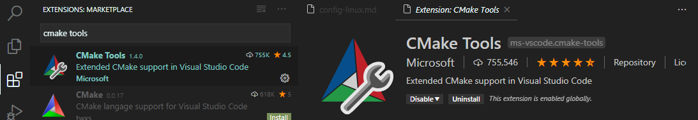
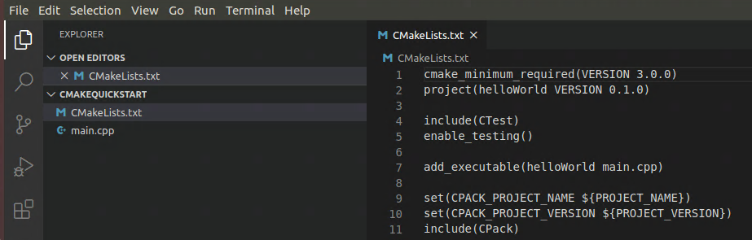
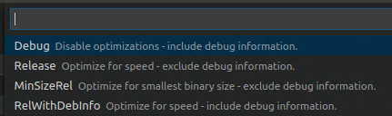

Get started with CMake Tools on Linux
CMake is an open-source, cross-platform tool that uses compiler and platform independent configuration files to generate native build tool files specific to your compiler and platform.
The CMake Tools extension integrates Visual Studio Code and CMake to make it easy to configure, build, and debug your C++ project.
In this tutorial, you'll use the CMake Tools extension for Visual Studio Code to configure, build, and debug a simple C++ CMake project on Linux. Aside from installing CMake, your compiler, debugger, and build tools, the steps in this tutorial apply generally to how you'd use CMake on other platforms, like Windows.
If you have any trouble, please file an issue for this tutorial in the VS Code documentation repository.
Prerequisites
To complete this tutorial on Ubuntu, install the following:
C++ extension for VS Code. Install the C/C++ extension by searching for 'c++' in the Extensions view (
kb(workbench.view.extensions)).
CMake Tools extension for VS Code. Install the CMake Tools extension by searching for 'CMake tools' in the Extensions view (
kb(workbench.view.extensions)).
You'll also need to install CMake, a compiler, a debugger, and build tools.
Ensure that CMake is installed
The VS Code CMake Tools extension does its work by using CMake installed on your system. For best results, use CMake version 3.15 or greater.
See if CMake is already installed on your system. Open a Terminal window and enter the following command:
cmake --version
To install CMake, or to get a later version if you don't at least have version 3.15, see the instructions for your platform at Kitware APT Repository. Install version 3.15 or greater.
Ensure that development tools are installed
Although you'll use VS Code to edit your source code, you'll compile and debug the source code using the compiler, debugger, and build tools (such as make) installed on your system.
For this tutorial on Ubuntu, we'll use the GCC compiler, GDB to debug, and make to build the project. These tools are not installed by default on Ubuntu, so you need to install them. Fortunately, that's easy.
Check if GCC is installed
To see if GCC is already installed on your system, open a Terminal window and enter the following command:
gcc -v
If GCC isn't installed, run the following command from the Terminal window to update the Ubuntu package lists. An out-of-date Linux distribution can interfere with getting the latest packages.
sudo apt-get update
Next, install the GNU compiler, make, and the GDB debugger with this command:
sudo apt-get install build-essential gdb
Create a CMake project
If you have an existing CMake project that already has a CMakeLists.txt file in the root directory, you can skip to Select a kit to configure your existing project.
Otherwise, create a folder for a new project. From the Terminal window, create an empty folder called cmakeQuickStart, navigate into it, and open VS Code in that folder by entering the following commands:
mkdir cmakeQuickStart
cd cmakeQuickStart
code .
The code . command opens VS Code in the current working folder, which becomes your "workspace".
Create a CMake hello world project
The CMake Tools extension can create the files for a basic CMake project for you. Open the Command Palette (kb(workbench.action.showCommands)) and run the CMake: Quick Start command:

Enter a project name. This will be written to CMakeLists.txt and a few initial source files.
Next, select Executable as the project type to create a basic source file (main.cpp) that includes a basic main() function.

Note: If you had wanted to create a basic source and header file, you would have selected Library instead. But for this tutorial, Executable will do. If you are prompted to configure IntelliSense for the folder, select Allow.
This creates a hello world CMake project containing main.cpp, CMakeLists.txt (which tells the CMake tools how to build your project), and a folder named build for your build files:

Select a kit
Before you can use the CMake Tools extension to build a project, you need to configure it to know about the compilers on your system. Do that by scanning for 'kits'. A kit represents a toolchain, which is the compiler, linker, and other tools used to build your project. To scan for kits:
Open the Command Palette (
kb(workbench.action.showCommands)) and run CMake: Select a Kit. The extension will automatically scan for kits on your computer and create a list of compilers found on your system.Select the compiler you want to use. For example, depending on the compilers you have installed, you might see something like:

Configure Hello World
There are two things you must do to configure your CMake project: select a kit (which you just did) and select a variant.
The kit you selected previously is shown in the Status bar. For example:

To change the kit, you can click on the kit in the Status bar, or run the CMake: Select a kit command again from the Command Palette. If you don't see the compiler you're looking for, you can edit the cmake-tools-kits.json file in your project. To edit the file, open the Command Palette (kb(workbench.action.showCommands)) and run the CMake: Edit User-Local CMake Kits command.
Select a variant
A variant contains instructions for how to build your project. By default, the CMake Tools extension provides four variants, each corresponding to a default build type: Debug, Release, MinRelSize, and RelWithDebInfo. These options do the following:
Debug: disables optimizations and includes debug info.
Release : Includes optimizations but no debug info.
MinRelSize : Optimizes for size. No debug info.
RelWithDebInfo : Optimizes for speed and includes debug info.
To select a variant, open the Command Palette (kb(workbench.action.showCommands)) run the CMake: Select Variant command.

Select Debug to include debug information with your build.

The selected variant will appear in the Status bar next to the active kit.
CMake: Configure
Now that you've selected a kit and a variant, open the Command Palette (kb(workbench.action.showCommands)) and run the CMake: Configure command to configure your project. This generates build files in the project's build folder using the kit and variant you selected.
Build hello world
After configuring your project, you're ready to build. Open the Command Palette (kb(workbench.action.showCommands)) and run the CMake: Build command, or select the Build button from the Status bar.

You can select which targets you'd like to build by selecting CMake: Set Build Target from the Command Palette. By default, CMake Tools builds all targets. The selected target will appear in the Status bar next to the Build button.
Debug hello world
To run and debug your project, open main.cpp and put a breakpoint on the std::cout line.
Then open the Command Palette (kb(workbench.action.showCommands)) and run CMake: Debug. The debugger will stop on the std::cout line:

Go ahead and press kb(workbench.action.debug.start) to continue.
You've now used the VS Code CMake Tools extension to use CMake to build and debug a C++ app on Ubuntu. The steps are the same for other platforms; the difference being how you install CMake and the compiler/debugger for the platform of your choice. For instructions on setting up compilers/debuggers for other platforms, see the following:
Next steps
- Explore the CMake Tools documentation
- Review the Overview of the C++ extension